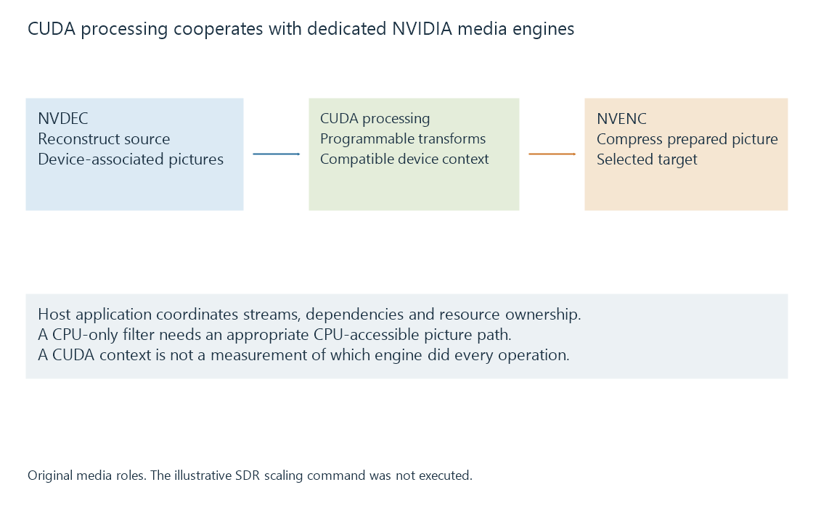

NVIDIA CUDA in media processing
CUDA provides NVIDIA GPU compute and device-memory interfaces used for programmable picture processing and interoperability around dedicated video engines.
CUDA supplies programming and device-memory facilities for NVIDIA GPU compute. Media applications can use it to transform decoded pictures and connect suitable device resources to dedicated video engines.
NVDEC and NVENC are separate specialized engines. A CUDA context or frame label can participate in their route without meaning that general compute cores perform the entire compressed-video operation.
A media route contains several kinds of work

| Role | Media task |
|---|---|
| NVDEC | Supported source reconstruction |
| CUDA processing | Programmable picture operations and associated memory work |
| NVENC | Supported target compression |
| Host application | Resource parsing, submission, timing and output coordination |
The combination depends on the implemented pipeline. A hardware decoder can also have post-processing and output-layout preparation defined by its API.
A device frame changes the filter input
A CUDA hardware frame describes picture data through the applicable device/frame context. A CUDA-capable filter needs a compatible layout and device relationship.
This original FFmpeg command illustrates a selected route for an SDR, 16:9 source with MP4-compatible AAC audio:
ffmpeg -hwaccel cuda -hwaccel_output_format cuda -i input-sdr.mp4 -map 0:v:0 -map 0:a:0 -vf scale_cuda=1280:720 -c:v h264_nvenc -c:a copy output.mp4
The command was not run. It assumes the device and FFmpeg build expose the required paths.
The requested hardware-frame output supplies the filter path with device-associated pictures. scale_cuda produces the selected size, and h264_nvenc encodes the prepared output. Audio copying is another selected operation.
This example does not implement HDR-to-SDR colour processing. Its declared SDR input makes the demonstrated scaling route a defined subject.
A CPU-only filter requires a compatible CPU-accessible frame. Adding that operation can introduce a transfer or mapping and a subsequent preparation for hardware encoding.
Asynchronous submission needs dependencies
CUDA work can be queued into streams. Returning control to the CPU is different from completing all queued work.
Use an original three-operation model for one picture:
| Operation | Model interval |
|---|---|
| Produce the input picture | 0–4 ms |
| Read input and write processed result | 4–7 ms |
| Consume the result | 7–12 ms |
The intervals illustrate required dependencies, not actual GPU timings. Starting the second operation at two milliseconds would violate this model's input-readiness condition.
Work in a stream has its documented ordering relationship. Dependencies across streams need suitable synchronization rather than a guess based on how quickly the host calls returned.
Those relationships also govern when picture storage can be reused.
Layout and meaning remain application inputs
Device memory can contain planar, semiplanar or other layouts. Pitch, plane offsets and sample format determine how data is addressed. Colour and media-time information determine how it should be interpreted.
A CUDA kernel needs the intended operation on those values. Its execution facility does not infer a tone-mapping policy or decide which subtitle should be painted.
See Also
- NVIDIA NVDEC
- NVIDIA NVENC
- NVDEC and CUVID API names
- GPU compute and video processing
- The hardware decode-filter-encode pipeline
- Media filter graphs